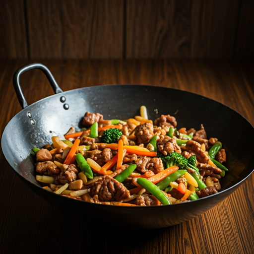

Apfelstrudel
Unser Apfelstrudel wird nach altem Familienrezept hergestellt. Der hauchdünne Teig umschließt eine Füllung aus saftigen Äpfeln, Rosinen und einer aromatischen Zimt-Note. Ein Geschmackserlebnis, das Sie nicht vergessen werden.
Lust auf was Neues?

Pfanne vs. Wok - Was ist besser?
Gemüse und Cashewnüssen. Das Rindfleisch ist in dünne Streifen geschnitten und ist perfekt gegart. Das Gemüse ist bunt und knackig, und die Cashewnüsse verleihen dem Gericht eine angenehme Crunchiness. Das Gericht sieht sehr appetitlich aus und man kann sich vorstellen, wie lecker es schmeckt.
